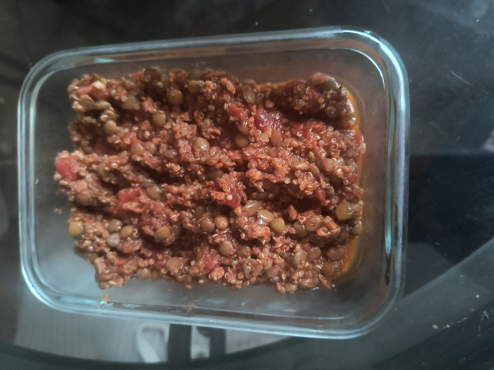

A quick, high-protein, high-fiber bowl with zero added sugar.

One serving of lentil chili.
This is my go-to when I want something warm and filling that still hits my macros. Lentils and TVP carry the protein, quinoa and cinnamon round it out, and it comes together in one pot in about the time it takes the TVP to rehydrate. No added sugar, plenty of fiber, low in calories but still very filling, and it reheats well if you want to make it ahead.
Makes 2 servings, 1½ cups each.
Want to make it your own? Try adding:
Keep in mind that any additions will alter the nutritional profile, so plan accordingly.